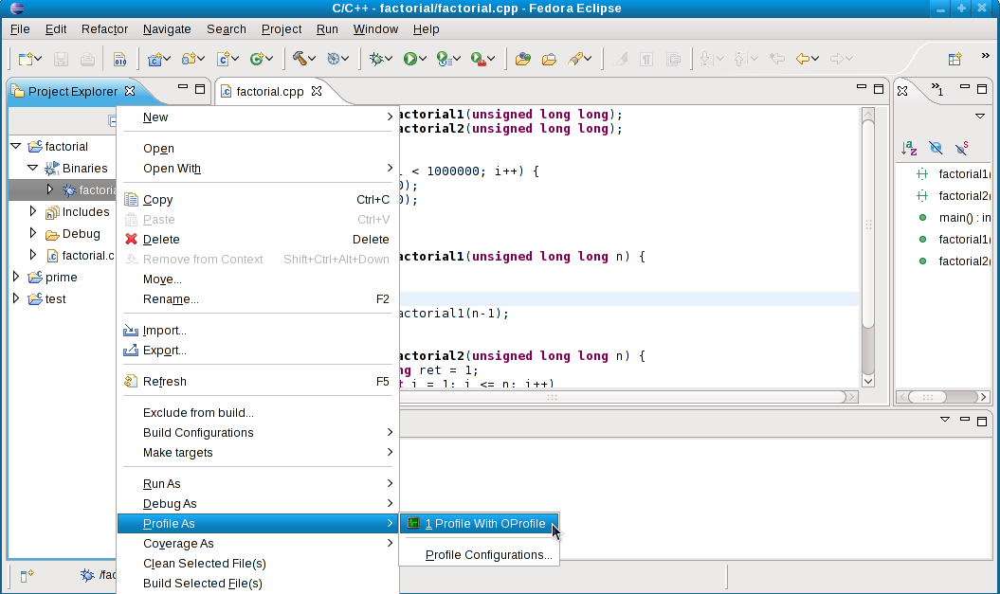
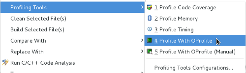

| Launching A Profile | ||
|---|---|---|
|
|
|
|
| Installation and Set-Up | Profiling Configuration | |
The purpose of the OProfile plug-in is to provide useful profile information in a user-friendly manner. To do this, it first gathers the required information. The plug-in hooks into the Eclipse and CDT's launching facilities; in doing so, profiling becomes as easy as a normal run of your program.
During a profile run, the OProfile plug-in will start, stop and perform other OProfile tasks in the background as needed, while the binary being profiled runs as normal. Currently, it is possible to start profiling when a user binary is run and stop after the binary has returned as well as the ability to start/stop profiling at arbitrary times.
Most users are interested in profiling where a program spends the most CPU time during execution. The OProfile plug-in for Eclipse includes a one-click launch feature which profiles this. The one-click launch sets appropriate defaults for a profile configuration using the execution time event, and launches the profile with no further required user intervention.
To use the one-click launch, right click on the project, the binary or in an open editor for a source file belonging to that project. Then, navigate to Profile As and click Profile With OProfile to start the launch.

The OProfile plug-in allows you to configure a profile run using several available OProfile options. These options are exposed via the launch configuration in a user-friendly manner, allowing for a more complex profile.
To customize a profile, right click on the project, the binary or in an open editor for a source file belonging to that project. Then, navigate to Profile As > Profile Configurations... to open the Profile Configurations menu. Refer to the Profiling Configuration section for more information about configuring a profile.
After configuring a profile, click the Profile button to launch the profile.
As of the 0.3.0 release, users can profile their applications in two ways: an automatic or manual profile. Automatic is the previously described method whereby the OProfile daemon is started before the binary is launched and stopped after the binary returns. A manual profile configures the daemon with the appropriate settings, but instead a control dialog is available which the user can use to start or stop the OProfile daemon at will. Each mode has their own configuration type and icon, as to disambiguate the type of profile an entry in the profile history. A feedback list in the dialog assures the user that the operations have been received, since at times an operation may take a few seconds to complete. This feature is most useful to profile applications which halt on input, or large applications for which it is undesirable to launch and return several times. It is not recommended to use this feature to only profile when you believe your application is spending time; the statistical nature of OProfile will account for this.


The basic workflow to run manual OProfile is
|
|

|
|
| Installation and Set-Up | Profiling Configuration |